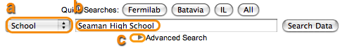
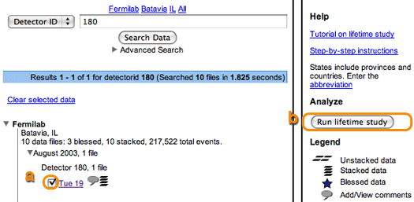
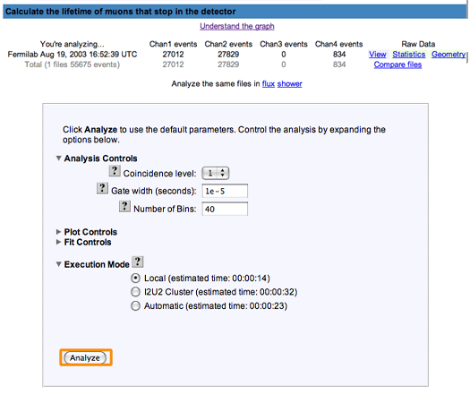
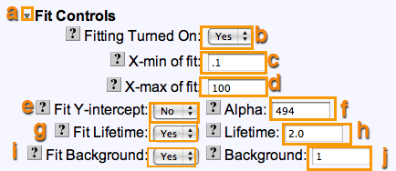
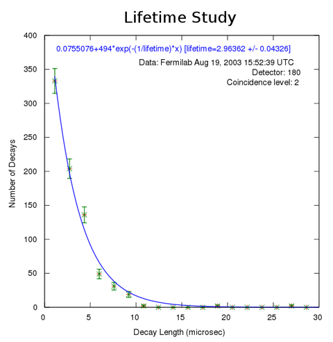

Keep two windows open, one with these instructions and the other with
the actual web pages. Go back and forth between them. Use the scroll
bar to move the instructions.
Look for the orange highlights for guidance.
Our goal here is to recreate the first plot used as Figure 1 in the
poster titled "Possible Particle Decays". You can access it from
posters. The data for this plot is from Walta (but listed under
Fermilab) and dated 8/19/2003
|
|
| Step 1: |
Click on the Data button in the main menu. |

|
| |
| Step 2: |
Click on the Lifetime button in the submenu. |
|
|
|
<
/td>
|
| Step 3.1: |
Look at the search page. Notice that you can go to a tutorial
on the lifetime study or these step-by-step instructions. The
legend shows icons for information about each data file.
Stacked data comes from scintillators that are stacked;
Unstacked data is for scintillators setup as an array. You can
click on the Comments icon to see or add comments on a data
file.
|
|
|
|
| Step 3.2: |
Search first for a data file from Fermilab with date starting with
8/19/2003.
a) Select School in the pulldown list
b) Enter Fermilab in the search field
c) Click on the little arrow next to "Advanced Search".
|
|  |
|
| Step 3.3: |
a) Select Start Date in the pulldown list for dates and
enter "8/19/2003" in the first date field.
b) Click Search Data
|
|
|
|
| Step 3.4: |
a) Click on the little arrow next to "Fermilab" to see the data
files associated with Fermilab.
|
|
|
|
| Step 3.5: |
a) Click on the little arrow next to "August 2003" to see the
data files for that month.
|
|
|
|
| Step 3.6: |
Hover over "Thu 19" to see additional information about the
data on that date. Notice that channels 1,2, and 4 have good
data.
|
|
|
| |
| Step 4: |
a) Select the data file labeled Tues 19 by clicking
on its checkbox
b) Click Run lifetime study on the right.
|
|

|
| |
| Step 5: |
Look at the number of events in each channel. The default
analysis parameters are set to a coincidence level of 1,
checking the energy of the second pulse and a gate width
of 1e-5 seconds.
Click on the questions mark
button  to learn
more about each of these. to learn
more about each of these.
Click Analyze to use the default parameters.
|
|

|
| |
| Step 6: |
Here's the graph of the lifetime (Number of decays vs. the
length in microseconds.) The longer it takes to decay, the
fewer the number of decays.
Click Change to change the parameters for the
analysis.
|
 |
| |
| Step 7: |
The plot in the poster has the following analysis parameters:
Coincidence level=2, Check energy of 2nd pulse = No, Gate
width: 1 e-4 seconds, and Number of Bins: 60.
a) Choose 2 in the pulldown list for coincidence level.
b) Select No for Check energy of 2nd pulse
c) Change
the Gate width to 1 e-4.
d) To recreate the
plot, you will need to use the plot controls.
Click on the small
arrow to view the Plot Controls.
|
 |
| |
| Step 8: |
a) Enter 60 for the number of bins
b) Enter 20 for X-max
c) Click Analyze.
|

|
| |
| Step 9: |
Notice this plot is getting closer to what we want. We now
want to add the fit controls.
Click Change parameters
and go back to the page where you set parameters for the
analysis.
|

|
| |
| Step 10: |
The plot in the poster has the following fit parameters:
X-min of fit: 0.2, X-max of fit: 20 and all initial guesses
set to blank and fit parameters to Yes.
a) Click the little arrow to view the Fit Controls.
b) Select Yes for Fitting Turned On
c) Set X-min of fit to .2.
d) Set X-max of fit to 20.
e) Set Fit Y-intercept, Fit Lifetime and
Fit Background to Yes
f) Clear all the fitting fields. (Alpha, Lifetime, Background).
g) Click Analyze
|
|

|
| |
| Step 11: |
Now we have a fit to our curve. This is the plot we want to save.
|
|

|
| |
| Step 12: |
Enter a name for the plot similar, but not the same as the one
shown and click Save Plot. If you do this tutorial more
than once, choose another name for the plot.
You will have access to this plot for your poster.
|

|
| |
| Step 13: |
Note you have successfully saved your plot and click
Close.
You can do more plots for other channels or go back to choosing
a new data set by clicking Lifetime. Anytime you can click
View Plots to see the plots you have made.
|
|
|